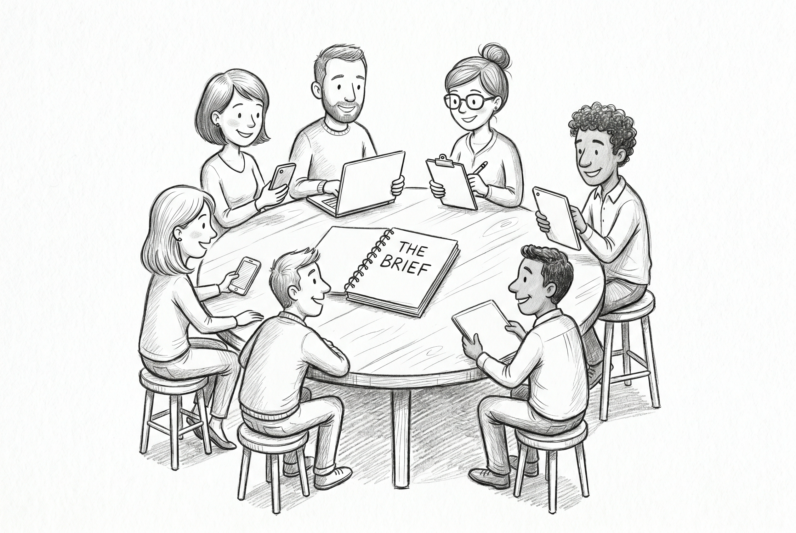
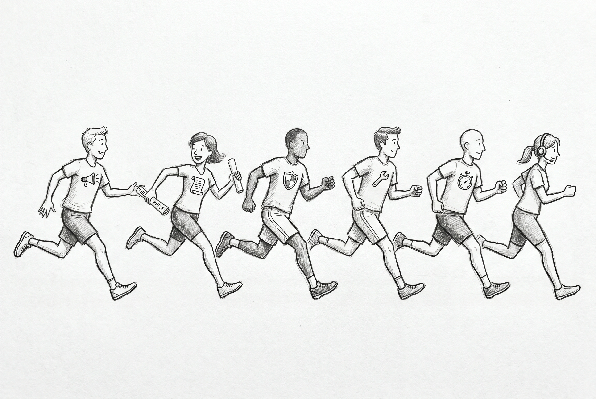

Spec-Driven Flow Becomes the Agent Default
Six teams. Six different jobs. One promotional discount code that has to ship by June first. All six of them now help build the thing — and each reaches the agent through a Claude product chosen for their kind of work.
The change that arrived quietly with the latest AI assistants is that the agent is no longer one tool for engineers only. It is a product family. Marketing, legal, security, engineering, site reliability, and customer support each have a Claude product built for their kind of work, and one shared document the agent reads first whenever any of them ask it to do anything.

To make this concrete, follow one feature all the way through: a discount code called SUMMER26. Marketing wants twenty-five percent off for first-time customers, valid June through August, capped at fifty thousand redemptions. That single sentence sets six different jobs in motion. Each team reaches the agent through the product Anthropic actually built for their kind of work — and the mapping below is fact-checked against Anthropic's published case studies, not just plausible-sounding.
Marketing splits into two patterns. Marketers who build their own tools use Claude Code — Anthropic's own growth marketer built a small Figma helper that generates ad variations and a quick drafting helper for responsive search ads, both inside Claude Code. Marketers who use ready-made workflows — campaign planning, brief drafting, brand-voice rewrites — use Claude Cowork with its marketing plugin, which talks to the design and analytics tools they already work in.
Legal and compliance use Claude Enterprise — the chat-based surface on Anthropic's Enterprise tier — with the legal plugin and small connectors that reach Google Drive, the team's ticketing system, Slack, and the calendar. Anthropic's December 2025 write-up on how its own legal team uses Claude describes doing most of the work inside Microsoft Word. The plugin handles contract review, NDA triage, and compliance workflows — exactly the kind of paper-pushing a junior legal associate would otherwise do by hand.
Security uses Claude Code's built-in security review, shipped in March 2026. It runs automatically on every code change and produces a written report covering the usual hazards: injection holes, broken authentication, leaked credentials, careless handling of customer data. A security engineer reads the report; the agent does the scanning. There is also a separate read-only mode the agent can run in — useful when security wants to see "what would you build for this?" without anything actually getting built.
Engineering uses Claude Code in full mode. Shopify and Mercado Libre were both named as production adopters at scale at Anthropic's developer conference in May 2026; Mercado Libre's stated goal is "90% autonomous coding by the third quarter." For SUMMER26, the engineering team drafts the technical plan and the task list against the approved brief, and the engineering lead reviews the result the way a senior engineer reviews a junior engineer's design.
Site reliability has two patterns. The simpler one is Claude Code invoked from inside Slack — the on-call engineer mentions the agent in the launch channel and it reads the brief and the live system state in one move. The more advanced pattern is a custom site-reliability agent built with Claude's developer toolkit, wired up to read live metrics, container logs, configuration files, and runbooks, and to draft incident post-mortems. An Anthropic engineer quoted in The Register describes the working agent as "reading the logs at the speed of I/O" during incidents — a thing no on-call human can match at three in the morning.
Customer support uses Claude Cowork with the customer-support plugin — one of eleven role-specific plugins Anthropic released in January 2026. The plugin's job is to triage incoming tickets, draft responses to common questions, package up escalations for the on-call engineer, look up a customer's history from past tickets, and turn resolved issues into knowledge-base articles for the next person who asks the same thing.
Six teams. Three Claude products between them, plus Slack as a shared room: Cowork for marketing and support; Claude Enterprise for legal; Claude Code for security, engineering, and site reliability. The brief is the constant. The product is the door each team walks through.
A product feature does not move through six neat phases; it moves through seven, and the seventh feeds the first. The classical software lifecycle is Planning, Requirements, Design, Implementation, Testing, Deployment, and Operations — and Operations is not the exit, it is the input to the next planning cycle. The loop is what every team is actually in.
![Hand-drawn pencil sketch showing seven stylized human figures arranged evenly around a circle, each at a numbered station 1 through 7 in clockwise order. In the center of the circle is an open notebook on a small wooden stand, labeled THE BRIEF. Each figure holds a different tool: figure 1 a laptop with a layout on screen; figure 2 a clipboard and a small scroll; figure 3 a monitor showing a shield icon; figure 4 an open laptop showing code; figure 5 a magnifying glass over a checklist; figure 6 a stopwatch and a dashboard panel; figure 7 a headset and a tablet. Curved pencil arrows connect each station clockwise, with the final arrow returning from figure 7 to figure 1. Soft graphite hatching, grayscale only.](images/section-2-sdlc-loop-sketch.png)
Walking the loop clockwise for SUMMER26: Planning (station 1) is Marketing and Finance using Claude Cowork — the campaign brief and the rough budget impact get drafted in one pass, where they used to be a marketing memo plus a separate finance meeting. Requirements (station 2) is Marketing and Legal using Claude Enterprise with the legal plugin — relevant clauses from past launches surface automatically, and the disclosure rules get drafted in language a non-lawyer can read. Design (station 3) is Security and Engineering using Claude Code in a read-only preview mode — the agent proposes an implementation outline in plain prose, and security writes the threat model against the proposal before any code exists.
Implementation (station 4) is Engineering using Claude Code in full mode — the technical plan and the task list get produced as a single coherent draft against the approved brief. Testing (station 5) is the longest stage and the one with the most ways to ship wrong work; it gets its own section below. Deployment (station 6) is SRE using Claude Code, often invoked from inside Slack — the launch runbook is drafted from the technical plan, and the on-call agent is in the launch channel before the feature is turned on for real customers. Operations (station 7) is SRE, Support, and Marketing all reading the same dashboard — the support plugin drafts the customer-facing answers from the brief, incidents get triaged in the same channel where launch was tracked, and redemption metrics flow back to Marketing for the next campaign. Station 7 hands back to station 1, because Operations is not the end of the loop — it is the start of the next one.
"The agent writes tests from the spec" is the line that ships wrong code. The failure mode has a name — asserting the same mistake twice — and it happens when the agent generates tests that recreate the same flaw the agent put in the code. A real testing harness for spec-driven AI work has six pieces in 2026, each available off the shelf:
- A precise contract derived from the brief. A structured list of what the feature must do, in a format the rest of the tools can check automatically — not the prose brief, a tighter version of it.
- Scenario tests written in plain English. Small playbooks like "when a first-time customer enters SUMMER26 at checkout, they get 25% off" — generated by the agent with rules attached so the scenarios stay concrete and check one thing at a time.
- Property tests that throw thousands of random inputs at the code and check that universal rules hold — the discount is never larger than the subtotal, the total is never negative, the same code never gets applied twice to the same customer.
- Contract checkers that send the system intentionally-malformed requests to find responses that break the contract — an expired code applied to a renewal, a price that overflows the field, a region the campaign was not supposed to reach.
- Mutation tests that secretly change the code in tiny ways and re-run the test suite. Any change the tests fail to notice is a real gap. This is the piece that catches the asserts-the-same-mistake-twice failure. Meta's engineering team reported about four times the bug-detection rate when AI-generated tests are graded this way instead of by simple coverage. The merge bar becomes "tests pass and the suite catches the secret changes," not just "tests pass."
- A second agent whose only job is to look for ways the first agent's work is wrong — because an agent that grades its own output will confidently call it correct.
The traditional handoff leaks in three predictable places. The kickoff meeting half-records who agreed to what, and the next team rebuilds the other half from Slack scrollback. The translation step — taking marketing's intent and rewriting it as an engineering ticket — drops constraints and reframes goals. The waiting step — the team that needs an answer sits idle until the previous team gets to their queue. The cross-team Claude pattern closes each of these leaks with a different mechanism, and the mechanism is the load-bearing part of the post.

The context is shared, not retranslated. Every Claude product reads from the same brief. Claude Code on the engineer's screen opens the same document that Claude Cowork loaded for marketing in Confluence, that Claude Enterprise loaded for legal inside Microsoft Word, and that Claude in Slack loaded for the on-call engineer in the launch channel. Small adapters connect the tools to that single source — each Claude product wires up to the same document in turn, so an edit anywhere shows up everywhere. The translation step is gone, because no team is rewriting the previous team's words; every team is editing the same brief.
The handoff is automated. When marketing marks their section of the brief ready, the review-routing rules on the project automatically request a sign-off from legal. When legal commits an amendment, an adapter syncs the change to the Confluence page compliance already reads, and to the Notion page other teams keep open. When engineering finishes the technical plan, Claude in Slack drops a summary in the channel where the launch is being tracked. When the deploy goes live, the same Slack agent drafts the customer-facing announcement from the brief. The handoff is no longer "we meet on Tuesday at three" — it is the next team's notification arriving with the document already open in front of them.
Friction collapses where the kickoff used to sit. A built-in Spec Kit command reads the task list produced at the end of planning and creates the corresponding tickets in Linear or Jira, routed to the right team — engineering tasks to engineering, site-reliability tasks to SRE, support tasks to support — each ticket already linked back to the brief and ready to start. The framework also requires every section of the brief to name its owner before the launch can move forward, so the right person gets paged automatically instead of someone in Slack having to remember whom to tag. The kickoff meeting is no longer where the work begins; the work begins when the previous team's section is marked ready and the next team's tool reads it.
The handoff used to be the place where work got lost. With the brief in the middle of the loop and every Claude product reading from it through these small adapters, the handoff is where work transfers without ever leaving the document.
The agent did not give any team a new job. It gave the people already in the room a faster way to do the job they already had, and a single document — the brief in the center of the loop — that the agent reads first whenever it is asked to do anything at all. The pattern is universal in that sense: cross-team work has always needed a place outside any one person's head to hold what was agreed — not a methodology, not a brand-name workflow, just a document that the next session is guaranteed to open and the next reviewer is guaranteed to find.
References
- Anthropic. "How Anthropic teams use Claude Code." claude.com/blog/how-anthropic-teams-use-claude-code. July 2025.
- Anthropic. "How Anthropic uses Claude in Legal." claude.com/blog/how-anthropic-uses-claude-legal. December 2025.
- Anthropic. "Cowork: Claude Code power for knowledge work." claude.com/product/cowork.
- Anthropic. "Plugins for Claude Code and Cowork." claude.com/plugins. Eleven open-sourced role plugins (Jan 30 2026).
- Anthropic. "Automated security reviews in Claude Code." support.claude.com — security reviews. March 2026.
- Anthropic. github.com/anthropics/claude-code-security-review.
- Anthropic Agent SDK Cookbook. "Site Reliability Agent." platform.claude.com — SRE agent.
- Anthropic Engineering. "Harness design for long-running applications." anthropic.com/engineering — harness design.
- Anthropic Red Team. "Property-Based Testing with Claude." red.anthropic.com — property-based testing. Early 2026.
- Claude Code Best Practices. code.claude.com/docs/en/best-practices.
- GitHub. "Spec Kit." github.com/github/spec-kit. Constitution Articles III and IX.
- Knight, Andy. "Gherkin Guidelines for AI." April 2026.
- PactFlow. "PactFlow MCP Server." October 2025.
- Specmatic. "Specmatic MCP Server." github.com/specmatic/specmatic-mcp-server.
- Meta Engineering. "Just-in-Time AI testing." April 2026.
- Claude.com Customers. Gradial (April 2026), Pendo (May 2026), Smartsheet (April 2026), Shopify and Mercado Libre announced at Code w/ Claude 2026 (May 6 2026). claude.com/customers.